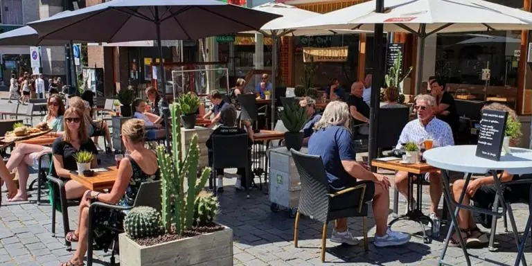
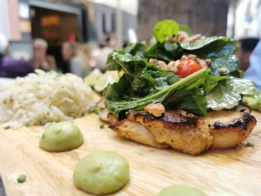
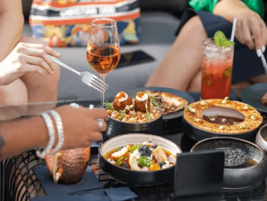
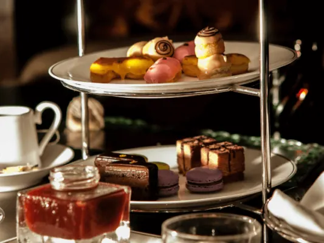
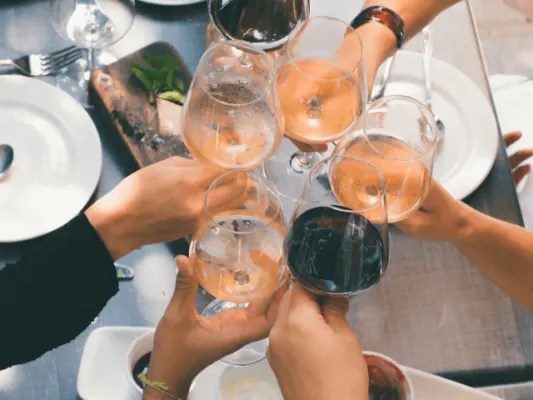
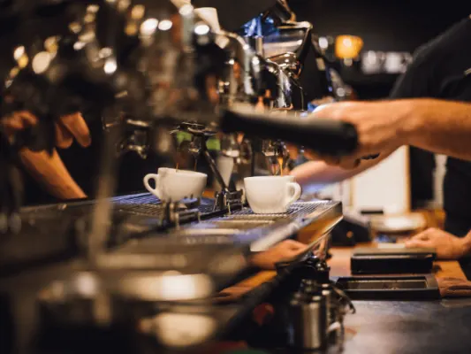
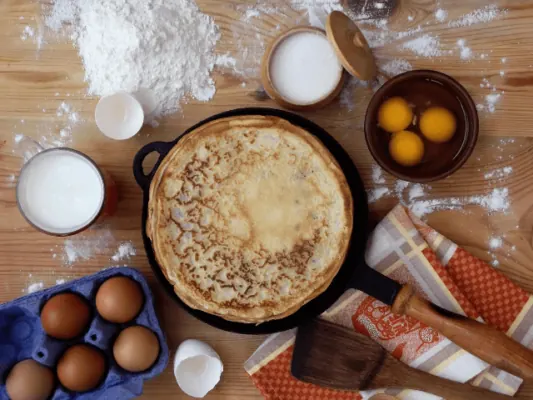
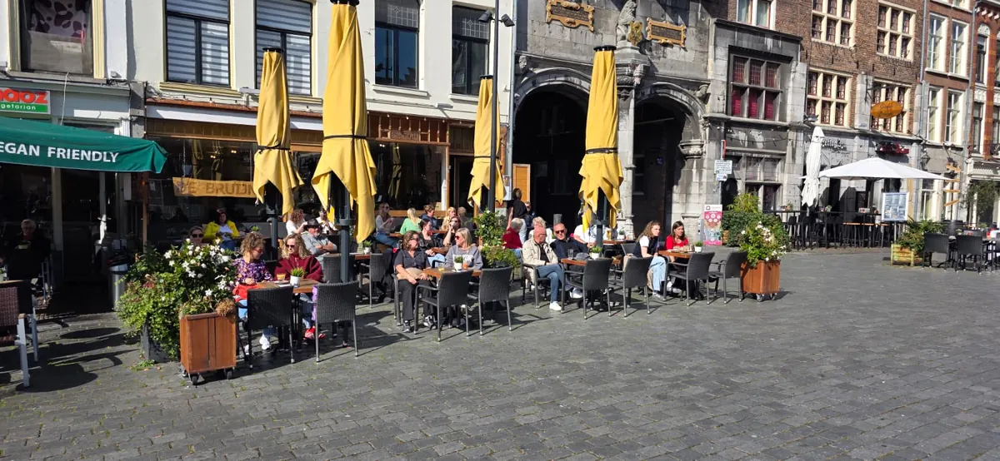

Gids
Lunch, ontbijt en high tea in Nijmegen
Bijgewerkt op
In het kort: Lunchen in Nijmegen doe je vooral aan de Grote Markt, in de Lange Hezelstraat, op de Waalkade en in de wijken. In de bedrijvengids staan 55 lunchrooms, 31 zaken voor ontbijt en brunch en 17 plekken voor high tea. Deze gids helpt kiezen per gelegenheid, ook met kinderen.
Nijmegen is een stad van terrassen en lunchrooms: aan de Grote Markt, in de Lange Hezelstraat, op de Waalkade en in de wijken. In onze bedrijvengids staan 55 lunchrooms, 31 zaken voor ontbijt en brunch en 17 plekken voor high tea. Deze gids helpt je kiezen, met onze artikelen over de lekkerste adressen per gelegenheid.
Lunchen
Van een broodje op de markt tot een uitgebreide lunch met uitzicht op de Waal: onze favoriete lunchplekken, en tips voor wie betaalbaar wil eten.

Lekker lunchen in Nijmegen, dit zijn de beste plekjes
Een dagje Nijmegen? Dit zijn de beste plekken om te lunchen in de binnenstad, van een snelle broodjeszaak tot uitgebreid lunchen met vrienden.

Betaalbaar uit eten in Nijmegen: zo doe je dat!
Lekker uit eten in Nijmegen zonder veel te betalen? Tips en betaalbare restaurants, van studentenmaaltijd tot dagschotel.

De 10 Beste Restaurants in Nijmegen Centrum
Uit eten in Nijmegen centrum? Dit zijn de 10 beste restaurants in de oudste stad van Nederland, van gezellige bistro tot sterrenrestaurant.
High tea en high wine
Een middag lang thee, taartjes en sandwiches, of de hartige variant met wijn: de mooiste high tea- en high wine-locaties van de stad.

Op zoek naar de beste high tea locaties in Nijmegen? 5 tips!
Zin in een high tea? Dit zijn de 5 beste high tea locaties in Nijmegen, met zoete en hartige lekkernijen voor een gezellige middag.

Droom je van een high wine in Nijmegen? Dit zijn de 5 mooiste locaties
Zin in een high wine in Nijmegen? Dit zijn de 5 mooiste plekken voor wijn met bijpassende hapjes, ideaal met vriendinnen of collega's.
Ontbijt, brunch en koffie
Alle 31 zaken voor ontbijt en brunch en de koffiebars staan in de bedrijvengids. Zelf leren hoe je de perfecte cappuccino maakt? Volg een baristatraining.

Barista Training in Nijmegen: Word Koffie Expert
Leren hoe je de perfecte cappuccino maakt? Dit zijn de barista cursussen en trainingen in Nijmegen, voor thuisbarista's en professionals.
Het belang van goede koffie op het werk
Nijmegen is een stad van koffiedrinkers. Waarom goede koffie op de werkvloer zo belangrijk is en hoe je het op kantoor goed regelt.
Met kinderen en pannenkoeken
Restaurants waar kinderen welkom zijn, en de vijf beste pannenkoekenrestaurants in en rond de stad.

Uit eten met kinderen in Nijmegen? Deze locaties mag je niet missen
Uit eten met kleine kinderen? Dit zijn de leukste kindvriendelijke restaurants in Nijmegen, met speelhoek, kindermenu of buitenruimte.

Pannenkoekenrestaurants in Nijmegen – Onze Top 5
Zin in pannenkoeken? Dit zijn de 5 leukste pannenkoekenrestaurants in Nijmegen, van 't Hoogstraatje tot plekken met een speeltuin.
Andere gidsen: eten, drinken en cultuur
Lunchrooms in Nijmegen

UitgelichtDe Bruijn Lunchen op de MarktGrote Markt 21, 6511 KA NijmegenlunchontbijtafhalenBekijk aanbodNostravan Broeckhuysenstraat 48, 6511 PK NijmegenterraslunchCafé Camelot NijmegenGrote Markt 37, 6511 KB NijmegenlunchvegetarischveganAn - Bairro AltoAnnie Van Velzenhof 1, 6663 RK LentontbijtlunchSpot. Lunchcafevan Broeckhuysenstraat 40, 6511 PJ NijmegenontbijtlunchkindvriendelijkbedrijfsuitjeDROOM de BoekweitBoekweit 4, 6534 AC NijmegenlunchafhalenparkerengroepenFikavan Broeckhuysenstraat 5, 6511 PE NijmegenlunchontbijtafhalenveganMUNT saladebarIn de Betouwstraat 28, 6511 GD NijmegenafhalenlunchvegetarischFabrikaatZaligestraat 10, 6663 KR Lentlunchaan het waterHeb je zelf een lunchroom? Kom hier als partner te staan.
Veelgestelde vragen
Waar kun je lekker lunchen in Nijmegen?
In de binnenstad rond de Grote Markt, de Lange Hezelstraat en de Waalkade zitten de meeste lunchrooms. Onze pagina met de beste lunchplekken geeft de adressen; in de bedrijvengids staan alle 55 lunchrooms.
Waar kun je high tea doen in Nijmegen?
In onze bedrijvengids staan 17 plekken voor high tea in Nijmegen. De vijf mooiste staan op onze high tea-pagina.
Waar kun je ontbijten in Nijmegen?
In de bedrijvengids staan 31 zaken voor ontbijt en brunch, in het centrum en in de wijken, met openingstijden.